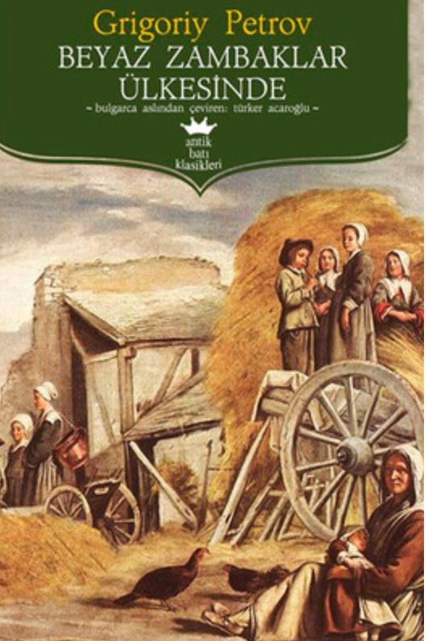

Ben İlayda Nur Par. 19 Ağustos 1998 yılında İstanbul'da doğdum. 24 yaşındayım, aslan burcuyum. Ortancayım.
Olabilecek çoğu aslan burcu özelliğini taşıyorum. İnatçılık, gıcıklık, iyi niyetlilik, arkadaş canlısı olmak, fedakarlık... Bu özelliklerin hepsi var. Çok sakin bir yapım var, kolay kolay sinirlenmem.
2020 yılında Namık Kemal Üniversitesi Biyomedikal Mühendisliği bölmünden mezun oldum.Aynı yıl okulda öğrendiğim teknik dersleri işletme iktisat pazarlama dersleriyle desteklemek için açıköğretim fakültesinden Sağlık Kurumları İşletmeciliği bitirdim. 1,5 yıl boyunca aktif olarak medikal cihaz üretimi yapan bir şirkette üretim sorumlusu olarak çalıştım. Şimdi ise yazılım öğrenerek, ingilizcemi geliştirerek kendime farklı bir yol çiziyorum.
Cilt bakımı, kozmetik gibi konulara ilgiliyim. Bu konudaki araştırmaları okumayı, ürün içerik bilgisi araştırmayı, bu konularla alakalı her türlü içeriği izlemeyi seviyorum.
Gezmeyi, yeni yerler görmeyi çok sevsem de tam bir ev kuşuyum. Üç gün dışarıda gezdiysem iki gün evde oturmayı tercih ederim. Kitap okumayı, dizi-film izlemeyi de çok severim ancak ilgi odağım hemen dağılır ve kendimi farklı işlerde bulurum. Yemek yapmayı hiç sevmem ama yemeyi çok severim.
Yukarıda da bahsettiğim gibi astrolojiye çok meraklıyım. Benzer tarihlerde doğan insanların benzer özellik taşımaları hep çok dikkatimi çekmiştir. Doğduğumuz zamandaki gökyüzünün şekli bence gerçekten karakterimiz hakkında bilgi veriyor.
Pazarlama, ikna kabiliyeti gibi konular ilgimi çok çekiyor. Dünya kurulduğundan beri insanlar birbirini ikna etmiş ve çoğu kişi belli bir ürünü,hizmeti vs. pazarlamış. Günümüz dünyasında da bu konulara hakim olmanın ve insan psikolojisini anlamanın çok önemli olduğunu düşünüyorum.
Ve tabi ki kendi işim gereği insan vücuduyla ilgili konuları, insan vücudundaki her bir yapı için geliştirilen tüm cihazları, yapılan çoğu araştırmayı okumayı, üretilen içerikleri göz atmayı çok seviyorum.
Kore yapımlı bu dizi 90lı yıllarda Kore'nin ekonomi,kültürel,eğitim yapısını güzel bir arkadaşlık, komşuluk ilişkisi içerisinde anlatıyor. İlgilenenler için;
Diziye buradan ulaşabilirsiniz.Kennedy'nin katliamını durdurmayı görev edinmiş birinin 1963 yılına geri dönmesini anlatır. Kitaptan uyarlanmıştır. İlgilenenler için;
Diziye buradan ulaşabilirsiniz.Biliminsanlarının uzaylılarla ilginç bir şekilde iletişime geçmesini anlatır. İlgilenenler için;
Filme buradan ulaşabilirsiniz.Sıfırdan başlayan ve lidersiz bir şekilde evrilen, iyi bir medeniyet haline gelen bir ülkenin geçirdiği süreçler anlatılmıştır. İncelemek için resmin üzerine tıklayabilirsiniz.
